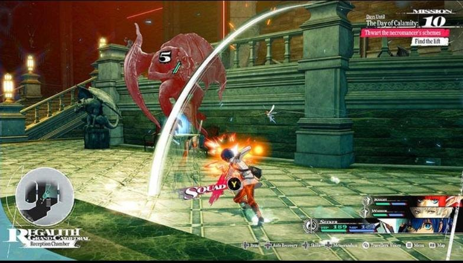

Master's student at Carnegie Mellon's Entertainment Technology Center. I work on skill and combat systems, data-driven content pipelines, and Unity tools that let designers iterate without waiting on code.
A two-player duel played on the Board touch table, with 2 classes and 25 skills, made by a team of five: a producer, an artist, a skill designer and two programmers. I'm both the technical designer and one of the programmers. I built the data pipeline, the skill effect system and the editor tools around them, so our skill designer iterates by editing spreadsheets and data instead of waiting for code changes.
数值管线Data PipelineData pipeline
我搭建了从表格到游戏内资产的数值管线，并编写了导入工具。全部技能和职业数值都经过这条线进入游戏：
I built the pipeline that takes balance data from spreadsheets into game assets, and wrote the importer for it. Every skill and class value enters the game this way:
Excel / Google Sheet策划维护数值，支持多版本数值表Designers own the numbers; multiple balance versions supported
→
CSV导出中间格式Exported interchange format
→
导入工具Importer表头别名匹配、表格一致性校验Header alias matching and consistency checks
→
ScriptableObject按 ID 原地更新，资产 GUID 与引用保持稳定Updated in place by ID, so asset GUIDs and references stay stable
我让导入工具按 ID 原地更新资产：重新导入数值不会生成新资产，GUID 保持不变，场景和预制体里对技能的引用也不会断。
I made the importer update assets in place by ID. Re-importing never creates new assets, GUIDs stay the same, and references to skills in scenes and prefabs never break.
I designed this system on top of [SerializeReference]. A skill is a combination of effects, and I defined each effect's trigger timing, targets and resolution order.
我实现了伤害、护盾、元素附着、位移、持续区域等效果类型。所有技能都由这些效果拼装配置而成，代码里没有按技能 ID 写死的逻辑，新增技能只需要配数据。
I implemented the effect types the skills are built from, including damage, shields, elemental status, displacement and persistent zones. Every skill is assembled from these effects, nothing in the code is hard-coded per skill ID, and adding a skill only takes data.
策划工具Designer ToolsTools
我编写了自定义 Inspector 和批量效果生成工具，减少重复配置。
我开发了真机运行时关卡编辑器，策划可以直接在触摸桌上摆放、缩放、旋转道具区域。
我把关卡布局存为 JSON 并导出进构建，每局开始时随机选用一个开局。
I wrote custom Inspectors and a batch effect generator to cut repetitive setup.
I built an on-device runtime level editor, so designers place, scale and rotate prop zones directly on the touch table.
I save layouts as JSON and ship them in the build, and the game picks one at random at the start of each match.
CMU ETC 学期项目CMU ETC Semester Project
It Takes 2 Alices
身份Role
程序Programmer
时间Timeline
2026.01 – 2026.05Jan – May 2026
平台Platform
Tilt Five 桌面 ARTilt Five tabletop AR
类型Genre
双人合作编程解谜Co-op programming puzzle
It Takes 2 AlicesTILT FIVE · 桌面 ARTILT FIVE · TABLETOP AR
面向儿童的编程启蒙游戏。灵感来自 Alice 3 编程环境，两名玩家围着 Tilt Five 桌面 AR 一起解谜，在合作中接触基础编程概念。
A game that introduces young children to programming. Inspired by the Alice 3 programming environment, it has two players solving puzzles together around a Tilt Five tabletop AR board, picking up basic programming ideas as they cooperate.
I programmed the puzzle mechanics and the two-player interactions, turning abstract programming concepts into level mechanics kids can play with by hand. The levels cover:
A first-person narrative adventure. You play Sosa, a fisherman trying to reconnect with his daughter, casting lines, collecting fish species and exploring a mysterious lake.
钓鱼核心循环The Fishing LoopCore loop
抛竿Cast抛竿前显示鱼钩预测轨迹A predicted hook trajectory shows before the cast
→
上钩Hook不同鱼种有各自的判定区域Each fish species has its own hitboxes
→
收线Reel与鱼角力：耐力系统 + QTE，分阶段收线Fight the fish: stamina system plus QTEs, reeled in stages
我的工作My RoleGameplay engineer
设计并实现抛竿、上钩、收线三段式钓鱼循环，以及鱼竿转动和与鱼角力的手感。
实现鱼的耐力与挣扎系统和 QTE 系统，为不同鱼种定义收线阶段和判定区域。
通过多轮试玩测试和对照实验，调校耐力消耗、QTE 判定等手感参数，在挑战性和爽快感之间找平衡。
实现钓点激活、钓鱼日志查看等场景交互。
Designed and built the three-stage cast, hook and reel loop, including rod rotation and the feel of fighting a fish.
Built the fish stamina and struggle system and the QTE system, with reeling stages and hitboxes defined per species.
Tuned stamina drain, QTE timing windows and other feel parameters through rounds of playtests and A/B comparisons, balancing challenge against satisfaction.
Implemented world interactions such as activating fishing spots and browsing the fishing journal.
A narrative-driven game. You talk with a cyber shaman about the meaning of existence. Each choice changes how the NPC responds and steers the story toward one of 10 endings.
我的工作My RoleDesign & QA
设计对话分支和 NPC 反应，让回应符合角色性格和叙事定位，故事真相逐步揭开，不一次说破。
开发过程中遍历测试全部分支，确认每个选项触发正确回应，所有结局都能正确抵达。
Designed the dialogue branches and NPC reactions so every response fits the character's personality and narrative role, with the truth revealed step by step.
Tested every branch throughout development to confirm each option triggers the right response and every ending can be reached.
为什么派对游戏在直播中如鱼得水Why Party Games Thrive on Live Streaming
PARTY × STREAM
如果你看过一群人在直播里玩派对游戏，你大概注意到过一件奇怪的事：有时候，看别人玩和自己玩一样有趣——甚至更有趣。你没有拿着手柄，也没有做任何决定，但你依然全情投入——猜测结果、对失误做出反应、选边站队、看着混乱上演而哈哈大笑。像《Among Us》或《Jackbox Party Pack》这样的游戏，不只是能在直播环境中运作——它们似乎就是在直播中如鱼得水。
If you’ve ever watched a group of people play a party game on stream, you’ve probably noticed something strange: sometimes, it’s just as fun — if not more fun — to watch than to play. You’re not holding the controller, you’re not making any decisions, and yet you’re still fully engaged — guessing outcomes, reacting to mistakes, picking sides, laughing at the chaos as it unfolds. Games like Among Us or the Jackbox Party Pack don’t just work in a streaming environment — they seem to thrive in it.
So what’s actually happening here? Why do these games feel so naturally compatible with being watched?
The “Second Layer” of Players
The answer starts with a simple shift in perspective: party games don’t just have players — they have spectators.
In most traditional games, the experience is centered almost entirely on the person holding the controller. If you’re not playing, you’re missing out on the core interaction. But party games operate differently. Even without direct control, viewers are constantly participating in their own way — predicting outcomes, judging decisions, forming alliances in their heads, or rooting for (and against) specific players.
In that sense, there’s a second layer of engagement happening in parallel to the actual gameplay. The audience isn’t passive; they’re mentally playing along.
This is what makes party games uniquely suited for streaming: they are not just playable — they are watchable by design.
Why Party Games Work So Well on Stream
This isn’t just coincidence. From a design perspective, many party games naturally align with what makes live streaming engaging.
First, they are easy to read. The rules are simple, the goals are clear, and the state of the game is usually obvious at a glance. A viewer can drop into the middle of a stream and still understand what’s going on within seconds. There’s very little friction between “watching” and “understanding.”
Second, they are driven by social dynamics rather than complex systems. The most memorable moments rarely come from mechanics — they come from people: betrayal, bluffing, panic, overconfidence, or just pure chaos. These are inherently performative elements, and they translate extremely well to an audience.
Third, they operate in short, repeatable loops. Rounds are quick, outcomes happen frequently, and the game constantly resets into a new scenario. This creates a steady rhythm of tension and payoff that fits perfectly with the pacing of a live stream.
And perhaps most importantly, failure is not a punishment — it’s content. In many games, losing is frustrating. In party games, losing is often the funniest outcome. Mistakes, misplays, and unexpected turns are exactly what the audience is there to see.
When Games Start Designing for the Audience
What’s more interesting is that this relationship is no longer one-sided. Party games aren’t just good for streaming — they are increasingly being designed with streaming in mind.
You can see this in how information is presented. Interfaces are cleaner, more readable, and often structured in a way that makes it easier for viewers to follow along. Key moments are emphasized, reactions are given space, and outcomes are framed in a way that encourages shared attention.
Some games go even further by directly involving the audience. Titles like the Jackbox Party Pack allow viewers to participate through their phones, turning spectators into active contributors. At that point, the boundary between player and audience starts to blur entirely.
Streaming, in this context, is no longer just a distribution channel — it becomes part of the design space itself.
The Trade-Offs
Of course, this shift isn’t without its downsides.
Designing for spectators can sometimes come at the cost of depth. When a game prioritizes readability and immediate entertainment, it may simplify systems that would otherwise offer more long-term engagement for players.
There’s also a subtle shift in who the “real” audience is. Is the game being designed for the people playing it, or for the people watching them play?
A good example of this is Content Warning. The game is built around a recording mechanic that allows players to capture whatever chaotic or entertaining moments happen during a run. At the end of each session, those clips are compiled and played back, turning the entire round into a kind of highlight reel.
It’s a system that’s almost tailor-made for streaming. It encourages players to “perform” for the camera, to create moments that are worth watching back, and by extension, worth sharing with an audience.
But that same design also reveals a limitation. Without that performative intent — without players consciously trying to create entertaining moments — the experience can feel noticeably flatter. For professional streamers, who are already skilled at pacing, timing, and creating humor, the system amplifies what they do best. For more casual players, however, those “highlight moments” don’t always emerge as naturally.
In other words, the mechanic doesn’t just capture content — it quietly assumes that the players will create it.
So, back to the question, “Is the game being designed for the people playing it, or for the people watching them play?” In many cases, the answer is both — but balancing those two groups is not always easy.
Designed for Virality, Not Longevity
Another factor shaping party game design is the increasingly fragmented way people consume entertainment — especially in a streaming-driven environment. When content needs to be instantly readable, quickly engaging, and easy to clip and share, simplicity becomes not just a feature, but a requirement.
As a result, many party games are designed with extremely low friction: simple rules, fast onboarding, and immediate payoffs. This makes them ideal for streams, where both players and viewers need to “get it” within seconds. But that same simplicity comes with a trade-off: repetition. When the core loop is too lightweight, it doesn’t take long before both players and audiences start recognizing the same patterns.
This leads to a very specific lifecycle, one that is closely tied to the rhythms of online content. A game explodes in popularity, dominates streams for a period of time, and then fades just as quickly once the novelty wears off. Goose Goose Duck is a good example of this. At its peak, it was everywhere — streamers, clips, and communities all centered around it. But as the interactions became familiar and the “new moments” slowed down, so did the attention around them.
In this sense, designing for streamability doesn’t just shape how a game is played — it shapes how long it lasts. Many party games end up behaving less like long-term systems and more like bursts of content: highly shareable, highly engaging, but inherently difficult to sustain over time.
Conclusion
Looking at all this, it becomes clear that the success of party games on stream isn’t accidental. It’s rooted in how they distribute attention — not just to the player, but to everyone watching.
The best party games don’t just create interaction — they create shared moments. Moments that are easy to read, fun to react to, and even more fun to experience together, whether you’re holding the controller or not.
Because in the end, a great party game isn’t just something you play. It’s something you perform.
When playing some so-called “deduction” games, you might have experienced this before: you understand the truth of the story, you’ve “picked” all the correct options, and yet… there’s no real sense of clarity. No moment where everything clicks. It doesn’t feel like you actually did any reasoning at all.
For players who are only here for the narrative, this kind of process — essentially narrowing things down through enumeration — might not be a problem. But for those who want to experience deduction, it can feel deeply unsatisfying.
And the issue usually isn’t that the puzzle itself is too simple or too complex. It’s something more fundamental: how the game guides the player.
A well-designed deduction game creates moments where the player pauses — where they start thinking, “What if it’s this? Or maybe that?” before eventually arriving at a conclusion on their own.
The tricky part, of course, is that this balance is incredibly hard to get right.
If the game guides too strongly, the player is no longer reasoning — they’re simply following instructions. The experience turns into execution rather than deduction.
But if the guidance is too weak, the opposite problem emerges. Players struggle to verify their own thinking, their ideas start to drift, and it becomes easy to lose sight of the intended narrative altogether.
So the player needs to be constrained — but they shouldn’t feel constrained.
That’s the space good deduction games operate in: a kind of controlled freedom, where the path exists, but the player still feels like they’re the one discovering it.
In the following sections, I’ll look at several different types of deduction games to explore how they approach this balance.
The first category is what I’d call strongly guided, structured deduction games, such as the Ace Attorney series and the Danganronpa series. While their gameplay differs in presentation, they largely follow the same underlying design philosophy.
In these games, every “correct” conclusion is pre-authored. The player’s role is to use collected evidence to identify contradictions in other characters’ statements and refute them at the right moment. Information is carefully staged and released over time, creating the feeling that the player is driving the pace of the investigation through questioning and rebuttal.
But in reality, the path of reasoning is highly linear. There are moments where a player may arrive at the right idea, yet still be rejected by the system simply for not following the expected sequence. The game isn’t just testing what you think — it’s testing when you say it.
As a result, the guidance in these games is explicit and tightly controlled. It ensures a strong, well-paced narrative, but at the cost of genuine deductive freedom.
On the other end of the spectrum are more open-ended deduction games with much weaker guidance, such as Return of the Obra Dinn and The Roottrees Are Dead.
These games do not present the player with a clear sequence of steps to solve. Clues are not cleanly handed over; they have to be found through the player’s own observation, and sometimes it is not even immediately obvious whether something counts as a clue at all. As a result, information tends to come in fragments, and meaning only emerges through cross-referencing.
Just as importantly, the game often does not validate the player’s conclusions right away. The order in which clues are discovered can vary wildly from player to player, and the investigation itself starts to feel almost sandbox-like. Rather than following a prescribed trail, players have to set their own goals based on whatever pieces of information they currently have.
This is exactly why these games are so highly regarded by deduction fans: they create space for genuine reasoning. But that same openness can also make them intimidating. For more casual players, they often feel directionless, with too little structure to hold onto.
Between these two extremes lies a middle ground, represented by games like Sherlock Holmes: Crimes and Punishments.
In these games, players are given the freedom to combine discovered clues and form their own deductions. Multiple conclusions are possible, each leading to a different outcome. Instead of searching for a single “correct” answer, the player is asked to make a judgment.
At the same time, this freedom is carefully bounded. To prevent completely unfocused speculation, the game imposes subtle constraints: only discovered clues can be used, and the possible connections between them are limited rather than infinitely open-ended.
In other words, the game preserves space for the player’s own reasoning, while still shaping it within a controlled structure. By supporting multiple outcomes, it also ensures that players are accountable for their conclusions — what you decide matters, even if it isn’t the “correct” answer in a traditional sense.
Looking across these different approaches, it becomes clear that deduction games are not defined by how complex their puzzles are, but by how they guide the player through the act of reasoning.
On one end, strongly guided games provide clarity and pacing, but risk reducing deduction to a sequence of correct inputs. On the other, more open-ended designs create space for genuine reasoning, but can leave players feeling lost and directionless. Between them lies a middle ground — one that offers freedom, but within carefully constructed boundaries.
The key, then, is not to remove guidance, but to hide it.
A good deduction game does not tell the player what to think. It shapes how they think — quietly, subtly, and often invisibly. The structure is there, but it doesn’t feel imposed. The answer exists, but it feels discovered.
And that difference is crucial.
Because the moment a player says, “I figured it out,” instead of “the game told me,” that’s when deduction truly happens.
There’s a moment every game developer runs into sooner or later. You hand your game to someone, they play for a few minutes, and then they pause and say something frustratingly vague: “I don’t know… it just feels weird.”
Not hard. Not confusing. Just… off.
What’s interesting is that players rarely complain about difficulty in a pure sense. Games can be brutally hard and still feel fair, even satisfying. What they react to much more quickly is a breakdown in expectation. When a game doesn’t respond the way they think it should, something deeper than difficulty gets disrupted. The experience stops feeling like a challenge and starts feeling like resistance.
At the core of this is an invisible contract every game quietly establishes. The moment a player touches the controls, they begin building a mental model: if I press this, the character should do that. This model forms incredibly fast, often within seconds, and it becomes the lens through which every interaction is judged. When the game behaves consistently, the player adapts, even to difficult systems. But when that contract is broken, even slightly, the illusion starts to crack.
What makes this tricky is that the problem often isn’t obvious. A tiny input delay, something as small as a few dozen milliseconds, can already create a sense of disconnect. Players won’t consciously say “this input is delayed by 80ms,” but they will hesitate, press buttons again, or feel like the game isn’t listening. In systems involving tracking — like VR or wand-based interaction — this effect compounds quickly. Latency, camera updates, and tracking stability all layer together, and suddenly the player feels like they’re slightly out of sync with the world.
Sometimes the issue isn’t even the input itself, but the feedback that follows. An action might technically trigger on time, but if the animation takes too long to start, or the visual response arrives a frame too late, the brain still registers it as sluggish. The player doesn’t separate logic from presentation — they experience them as one unified response. If that response feels delayed, the system feels unresponsive, regardless of what the code is actually doing.
Physics can introduce another layer of subtle friction. It’s tempting to lean on “realistic” movement, especially when using engines that simulate forces and acceleration. But realism often conflicts with expectation. Movement that accelerates too slowly, drifts slightly after stopping, or lacks clear boundaries can feel imprecise rather than immersive. Players aren’t looking for physical accuracy — they’re looking for predictability. They want to feel in control, not like they’re negotiating with the system.
What really breaks trust, though, is inconsistency. A jump that works most of the time but occasionally doesn’t register. A dash that cancels smoothly in one context but not in another. An interaction range that seems to shift depending on subtle conditions. These inconsistencies don’t just confuse players — they make the entire game feel unreliable. Once that feeling sets in, every failure starts to feel unfair, even if the underlying systems are technically correct.
This becomes especially clear in more experimental setups, like wand-based interaction. Imagine a cursor driven by a raycast from the player’s viewpoint. If the player moves the wand but the cursor doesn’t move — because the raycast is still hitting the same point in space — the system is behaving exactly as designed. And yet, to the player, it feels broken. Their expectation is simple: I moved my hand, so something on screen should respond. When that doesn’t happen, the disconnect is immediate.
Moments like this reveal an uncomfortable truth about game design. You’re not really designing systems — you’re designing perceptions. It doesn’t matter if something is logically correct if it contradicts what the player intuitively expects. In many cases, making a system “feel right” actually involves bending or even breaking the underlying rules.
That’s why so many effective design techniques revolve around subtle forms of forgiveness and exaggeration. Input buffering allows actions to register slightly before or after the “correct” moment. Small timing windows, like coyote time, give players the benefit of the doubt. Animations often begin instantly, even if the actual gameplay effect resolves later. Physics gets constrained, clamped, or simplified to remove ambiguity. Feedback is layered — visual, audio, and sometimes even camera motion — so that every action feels immediate and clear.
All of these techniques have one goal: to reinforce the player’s mental model rather than challenge it.
When a player says something feels “weird,” they’re not being vague — they’re pointing directly at a mismatch between expectation and response. And fixing that mismatch rarely involves adding more explanation or making the game easier. It involves restoring trust, making the system behave in a way that feels consistent, predictable, and aligned with what the player believes should happen.
In the end, a good game doesn’t just respond to input. It responds in a way that feels natural, almost inevitable. The player stops thinking about the controls entirely, and the interaction disappears into the experience.
And that’s when the game finally stops feeling wrong.
When we talk about immersion in games, what’s the first thing that comes to mind?
Is it the kind of experience you get from games like Fallout 4 or Baldur’s Gate, where players can fully customize their character’s appearance and attributes — essentially placing a digital “alter ego” into the game world and exercising complete control? Or is it closer to titles like The Witcher 3 or Kingdom Come: Deliverance, where you step into the shoes of a character with a defined personality, history, and identity?
For me, immersion happens when a player subconsciously accepts the game’s world and context, effortlessly projecting themselves onto the character they control. It’s that subtle shift where you stop “playing a game” and start feeling as though you’re genuinely existing within that space.
Of all the games I’ve played, only one delivered this feeling so intensely that finishing it left me with a lingering sense of emptiness: Persona 4 Golden. (To keep things brief, I’ll be calling Persona 4 Golden “Persona 4” or simply “P4” from here on.)
What Is Persona 4 ABOUT?
Protagonist Transformed from the City to the Countryside
The story of P4 is, at its core, surprisingly straightforward. The player takes on the role of a high school protagonist who transfers from the city to a rural town after his parents leave the country for work, with his uncle stepping in as his guardian.
Not long after arriving, the protagonist discovers an unusual ability — the power to enter the world inside televisions. Over the course of a single year, he gradually forms bonds with a diverse cast of companions, venturing into this mysterious TV world while unraveling the truth behind a series of murders in the real one.
On paper, this blend of reality and fantasy sounds almost absurd. Yet somehow, P4 makes it feel natural. Despite the surreal premise, the game delivers an experience so grounded that players can genuinely feel as though they’ve spent an entire year living in that quiet countryside town.
In my view, P4’s remarkable sense of immersion largely comes down to two key aspects:
The way the protagonist is designed — and what players are allowed to do through him.
The world the game builds — from its NPCs and environments to its music and gameplay structure.
In the following sections, I’ll take a closer look at how P4 brings the idea of “immersion” to life with such striking effectiveness.
The Main Character as an Extension of the Player
Protagonist Hanging on the Street
From a narrative standpoint, the protagonist of P4 stands out from many other Persona leads in one particularly striking way: he has almost no defined backstory. He is, essentially, a blank slate.
Right at the beginning of the game, the player arrives in the countryside by train, stepping directly into a new life. Beyond the simple premise — that his parents are working abroad, prompting his transfer — there is little else shaping his identity. No elaborate history, no dramatic personal baggage.
It’s a deceptively minimalistic choice, yet an incredibly effective one. The protagonist is entering an unfamiliar environment, and so is the player. Both are starting fresh, facing a world filled with uncertainty. This parallel naturally encourages a sense of resonance between player and character.
By avoiding overly fantastical or highly specific background details, the game removes barriers that might otherwise disrupt immersion. The protagonist doesn’t feel distant or inaccessible; instead, he becomes someone players can effortlessly project themselves onto.
Conversation Option with NPC
Another defining trait of the protagonist is that they are largely quiet and reserved. Unlike many RPG protagonists who constantly deliver long stretches of dialogue, this character rarely speaks on their own. Most conversations with NPCs are led by the NPCs themselves, and the game simply asks the player to respond at key moments by choosing from a few dialogue options.
Different responses influence the NPC’s affinity toward the player, so you’re encouraged to think about each character’s personality and decide what kind of reply would make the most sense. Of course, there are also a few goofy or unexpected options here and there, just enough to hint at the protagonist’s personality.
This “silent protagonist” approach greatly strengthens player immersion. When a game protagonist suddenly starts explaining things the player has never heard about — and holds long conversations on their own — it’s hard not to feel separated from them as a player. (Yes, I’m looking at you, The Witcher 3.
The Close Interweaving of the Ordinary and the Uncanny
Daily Activities
Another major contributor to immersion lies in how players must wrestle with their daily choices. The Persona series is built around its signature calendar system: no matter what you choose to do, time always moves forward, and most objectives come with firm deadlines.
This structure forces players to constantly decide how they want to spend each day. Whether it’s hanging out with a favorite character, working a part-time job, fishing to raise personal stats, or diving into a dungeon for exploration and combat, every choice carries weight. And more importantly, every decision comes with an opportunity cost.
You might plan to spend the afternoon fishing to boost a stat, only to receive an unexpected invitation from a character you care about. Accepting means delaying your stat growth — which could later lock you out of certain dialogue options. Declining, however, means missing a valuable Social Link moment.
What makes this system so compelling is how closely it mirrors real life. The future remains uncertain, but the present offers tangible, immediate decisions. Players often find themselves choosing what feels right now, even when aware of possible long-term consequences. It’s the same tension we experience outside of games: do we prepare for what might happen, or do we seize what’s in front of us?
Spend Time with Other Characters
P4’s brilliance lies in the fact that these activities are never trivial. There is no single “correct” path, no obviously optimal routine. The systems are deeply interconnected. Spending time with characters strengthens Social Links, which enhances combat effectiveness, which in turn supports story progression, which then unlocks more character interactions. When stats become a limiting factor, players naturally shift toward other activities to compensate.
Nothing feels meaningless. The value of each action is inherently balanced, while priority emerges entirely from the player’s personal motivations — what they want to do rather than what the game dictates they should do.
And that’s where immersion truly takes hold. The game subtly encourages players to manage their schedule much like they would in reality, crafting a lived-in experience shaped by preference, attachment, and consequence.
Immersion Beyond Player Control
Sunny and Raniy Days in P4
Immersion isn’t shaped by player agency alone. The elements presented by the game world — environments, music, characters — those things players cannot directly control — play an equally important role.
Visuals and audio, in particular, function as powerful tools for atmosphere and emotional guidance, allowing players to resonate with the experience on a more instinctive level. Persona 4 handles this with remarkable finesse.
The game features a dynamic weather system: days may unfold under clear skies, overcast clouds, rain, fog, or even snow as winter arrives. But the brilliance lies not just in visual variation — it’s in how the audio landscape shifts alongside it.
Clear days are accompanied by the upbeat, rhythm-driven Signs of Love, reinforcing the warmth and comfort of daily life. Cloudy days, by contrast, bring the more melancholic Heartbeat, Heartbreak, subtly reshaping the emotional tone. Then come the rainy days, where the game strips away all background music entirely, leaving only the sound of rainfall.
For players accustomed to constant BGM, this sudden absence is striking. The silence feels deliberate, unsettling — as though the game is quietly hinting that something is about to change. What’s fascinating is how this design choice is deeply intertwined with the game’s broader narrative arc. The mood shift isn’t explained through dialogue; it’s felt.
Foggy Days in P4
Later in the game, foggy days introduce Omen — a track that is heavy, oppressive, and unmistakably eerie. The first time I heard it, it genuinely sent chills down my spine. After spending hours immersed in cheerful everyday themes, the experience felt like being abruptly pulled out of a familiar routine and forced to confront a turning point in the story.
The unease created by the music, combined with subtle deviations in NPC behavior, made it clear that the lighthearted normalcy I had grown comfortable with was beginning to fracture. This is narrative design at its most refined — storytelling without exposition, emotion without explicit instruction.
Through the seamless interplay of sound, setting, and player perception, the game aligns its emotional rhythm with the player’s own. And in doing so, it achieves something rare: immersion that feels lived rather than presented.
Characters as the Soul of the Experience
Side Quest/Social Links Reveal the World
And now, we arrive at the aspect I most want to emphasize: character writing.
By this, I mean the portrayal of all characters within the game — not just the members of the main cast alongside the protagonist, but every NPC inhabiting the world of Persona 4. If I had to describe the game’s approach in a single phrase, it would be nothing short of astonishing.
What defines strong character writing? Some players might argue that a “well-written character” is simply one that aligns with their personal preferences. Others may point toward complexity or psychological depth. But for me, the true benchmark is something far more fundamental: authenticity.
These characters feel alive.
Each individual possesses a background, a social context, personal motivations, strengths, flaws, and — most importantly — a behavioral logic that does not revolve entirely around the player. They are not constructed merely as instruments of player gratification, but as people who appear to exist independently within the game’s world.
Persona 4 excels precisely because it embraces this philosophy. Before the protagonist even arrives in the rural town, several members of the main cast already share established relationships. They know one another, interact naturally, and maintain lives that do not begin with the player’s presence. The protagonist’s arrival doesn’t create these connections — it simply weaves him into them.
Uncover the Side that Hide from the Other (Even the Protagonist)
This subtle design choice produces a powerful effect: the player begins to sense that, even without their involvement, this world would continue to function. These characters would still live their lives. And rather than feeling like the center of a constructed universe, the player feels like a participant who has been fortunate enough to step into an already-breathing reality.
Why does this enhance immersion? Because it mirrors reality itself.
In real life, we enter new environments, meet new people, and gradually become part of existing social circles. We often reflect on how different things might have been had we not crossed paths with certain individuals. Persona 4 evokes exactly that sensation.
Within the game, players may join different clubs, work various part-time jobs, and encounter different characters depending entirely on their choices. Relationships emerge organically. Interactions between characters unfold in ways that feel consistent with their personalities.
Let me use a specific example to illustrate what makes Persona 4’s character writing so distinctive.
Yukiko Expressing Her Thought to the Protagonist
One of the main party members, Yukiko, comes from a family that has run a traditional hot spring inn for generations. Even though she’s still a high school student, she’s already helping manage the business. Because of this, everyone around her simply assumes that she will eventually inherit the inn — people even jokingly refer to her as the future “high school innkeeper.”
But Yukiko herself feels uncomfortable with this expectation. To her, it feels like her birth has already determined her future. In her mind, “inheriting the inn” seems like the only path available to her.
After meeting the protagonist (the player character), Yukiko gradually begins to question that assumption. With the protagonist accompanying her along the way, she gathers the courage to start searching for other possibilities in life. In most stories, this setup would naturally lead to a conclusion where Yukiko finds a completely different path, proving her personal growth.
But Persona 4 doesn’t do that.
In the end, Yukiko chooses to stay and help run the inn, preparing herself to inherit it in the future.
At first glance, this may seem like the story returning to square one. In reality, it’s one of the most respectful conclusions the game could give the character. Yukiko originally believed she was trapped by her background, yet in truth neither her family nor her friends ever forced that path upon her. The “cage” she felt trapped in was largely constructed from the expectations of people around her — and from her own fear of stepping outside those expectations.
The door of that cage, so to speak, had always been open.
The Boss Fight that Indicates Yukiko’s Situation, While the Game Hasn’t Unfold Her Story Yet
Once Yukiko realizes this, she also recognizes something else: the people she cares about, the place she loves, are all here. So she decides to stay — not because she has no choice, but because she chooses it for herself.
She was never opposed to the inn itself. What she resisted was the idea that her future had already been decided by others.
And so Yukiko ultimately chooses her own path. As the saying goes, true freedom is freedom of the heart.
Through Yukiko’s story, we can also see something interesting about how Persona 4 treats the player’s role. The protagonist doesn’t need to dramatically change every character’s life in order for the story to feel meaningful. The NPCs don’t exist purely to revolve around the player.
They have their own histories, personalities, and struggles. The player simply becomes a witness and companion, growing alongside these characters.
Much like real friendships: I may not be able to decide the road you take in the future — but I can stand beside you, support you, and walk with you until we each find our own way forward.
Reflecting their Deep Thought with the Protagnist
What’s also particularly admirable is the series’s willingness to portray imperfections. Even at the risk of players disliking certain characters, Persona prioritizes authenticity over idealization. Weaknesses, insecurities, contradictions — these are presented openly, creating personalities that feel grounded rather than engineered for approval. This is a level of character honesty that many games, especially those leaning toward safer, more pandering portrayals, struggle to achieve.
Persona 4 further reinforces this realism through everyday situations that resonate deeply with lived experience: comparing test answers after exams, making summer plans, worrying about personal struggles, and discussing future aspirations with classmates.
This grounded approach — this sense of emotional familiarity — is what transforms the characters from narrative components into something far more powerful: the heart of immersion itself.
When a Game Becomes a Place
Looking back, what makes Persona 4’s immersion so memorable isn’t rooted in spectacle, narrative complexity, or mechanical innovation alone. It emerges from something far more subtle — the sensation of having genuinely lived within its world.
Immersion, in this sense, is not simply about controlling a character or witnessing a story. It is about emotional continuity. It is about routines, relationships, atmosphere, and the quiet accumulation of seemingly ordinary moments that gradually construct a sense of presence. Persona 4 does not demand that players believe in its fantasy — it gently persuades them through familiarity.
By the time the journey ends, what lingers is not just the resolution of a mystery, but the strange and deeply personal feeling of leaving a place that once felt inhabited. The town, the music, the characters — they no longer feel like components of a game system, but fragments of an experience that unfolded over time.
Perhaps this is why finishing Persona 4 can feel unexpectedly hollow. Not because the story ends, but because the life you grew accustomed to quietly fades away.
And maybe that is the clearest indication of true immersion: when a game is no longer remembered as something you played, but as somewhere you once existed.
纵观整个系列，核心玩法公式基本没有变化。每一关都呈现一个分为我方与敌方势力的战场。除了玩家所选的角色之外，其他所有单位——包括武将和普通士兵——都是由 AI 控制、行为相对简单的 NPC。战斗围绕着串联几个攻击键来释放强力的蓄力攻击展开，同时不断积攒无双槽。槽满之后，玩家就可以发动一招毁灭性的必杀技，一口气消灭大批敌人。
In early 2025, Koei Tecmo released a new entry in the Dynasty Warriors series: Dynasty Warriors: Origins. With a title that feels very much like a soft reboot, this new installment genuinely brings renewed hope to a franchise that was on the verge of collapse after the failure of Dynasty Warriors 9.
In this article, I’ll first outline the long-standing situation the Dynasty Warriors series has found itself in, then analyze the more radical, foundational changes introduced by Origins, and finally share my thoughts on the challenges of sustaining and iterating on a long-running game franchise.
How the Dynasty Warriors Series Reached This Point
The Character Selection Screen
Dynasty Warriors is an action game series developed by Koei Tecmo, set in a fictionalized historical world inspired by Romance of the Three Kingdoms, one of China’s Four Great Classical Novels. In every entry prior to Origins, players could choose to play as famous generals from the Three Kingdoms era, experiencing the fantasy of charging through battlefields and cutting down enemies single-handedly.
Across the series, the core gameplay formula has remained largely unchanged. Each stage presents a battlefield divided into allied and enemy forces. Aside from the character chosen by the player, all other units — including generals and rank-and-file soldiers — are AI-controlled NPCs with relatively simple behavior. Combat revolves around chaining a few attack buttons to unleash powerful charge attacks, while continuously building up the Musou gauge. Once the gauge is full, players can activate a devastating special move that wipes out large groups of enemies.
At its core, Dynasty Warriors has always been about spectacle and catharsis. Enemy units are rarely threatening, especially on lower difficulties, and most encounters offer little resistance to the player. This is why the series is so often described as a “mowing grass” game — combat feels effortless, repetitive, and overwhelmingly one-sided, much like cutting through fields of grass without obstruction.
Visuals from Dynasty Warriors 5
With the exception of the series’ first entry as a more traditional fighting game and the eighth installment’s attempt at an open-world structure, nearly every Dynasty Warriors title has followed this same formula. While the roster of playable officers and weapon variations continued to expand over time, the core “mowing grass” gameplay inevitably ran into a fundamental limitation: a lack of challenge.
Even on the highest difficulty settings, difficulty is mostly expressed through inflated enemy stats. The player’s available actions don’t become any richer or more nuanced as a result. Combat often boils down to carefully watching enemy animations, dodging attacks, and repeatedly relying on the same effective charge attacks to deal damage. Meaningful interaction is minimal.
That said, one entry stands out as a notable exception: Dynasty Warriors 6.
The Ambush Camp Scene in Dynasty Warriors 6
After the success of its fourth mainline entry, Koei Tecmo did make a genuine attempt to shake up the formula and inject new life into the series. In Dynasty Warriors 6, the team introduced a morale system: by capturing enemy bases or defeating opposing officers, players could raise allied morale, directly strengthening friendly NPC generals and soldiers. Players could also launch surprise attacks by leaping down from cliffs above certain camps, causing enemy units to panic.
These mechanics did meaningfully push the series beyond pure “mowing grass.” By adding elements of territorial control and battlefield momentum, the game leaned more heavily into strategic decision-making tied to map awareness rather than raw combat efficiency.
However, this shift came with a major trade-off. The familiar charge attack (C-attack) system was replaced by the Renbu system, where a character’s moveset expanded only as long as their combo gauge was maintained — and shrank immediately once the player was hit. This change in combat felt difficult for many players to adapt to. Combined with what was widely perceived as a stripped-down amount of base content, the reception to Dynasty Warriors 6 was ultimately negative. Its director, Tomohiko Sho, would not go on to helm subsequent entries in the series.
Image of Dynasty Warriors 9
After the lukewarm reception and steadily declining reputation of the sixth and seventh entries — Dynasty Warriors 7 and Dynasty Warriors 8 — both of which reverted to the traditional charge attack system but abandoned the morale mechanics introduced earlier, Koei Tecmo chose to pursue yet another reinvention of the franchise.
At the time, “open world” design was at the height of its popularity, and the team decided to transform Dynasty Warriors 9 into an open-world battlefield experience. In practice, however, the result was a vast but hollow map, poor technical performance, and long, tedious stretches of traversal between objectives. These issues completely undermined the series’ signature sense of catharsis and power fantasy, causing the franchise’s reputation to hit a new low.
The Rise of Dynasty Warriors: Origins
In the aftermath of the eighth entry, Koei Tecmo took a hard look at the state of the franchise and decided on a full-scale overhaul. The studio brought back Tomohiko Sho, the director of Dynasty Warriors 6, to spearhead what amounts to a complete reinvention of the Musou series in Dynasty Warriors: Origins.
From a narrative standpoint, the most radical change is that players no longer take direct control of famous historical officers. Instead, they play as an original, fictional character who moves between the various factions of the Three Kingdoms, experiencing each side’s story from within. Midway through the game, players are free to choose which faction to commit to — and can even revisit that choice later. This structure gives the world a stronger sense of cohesion and allows each storyline to be explored more thoroughly.
As a result, character writing sees a noticeable improvement. Origins moves away from the exaggerated, one-note portrayals that defined many earlier entries and presents its generals with greater nuance and personality. These characters feel less like archetypes and more like individuals worthy of being called “legendary figures,” lending the overall narrative a sense of weight the series had long been missing.
An Overwhelming Number of Enemies on Screen
What truly makes Origins stand out — and arguably its strongest selling point — is its sheer, almost absurd number of enemies on screen. No other entry in the series delivers this kind of overwhelming sense of scale. Watching thousands of soldiers charge forward at once, accompanied by roaring battle cries, gives the battlefield a palpable sense of weight and momentum. The spectacle genuinely feels immersive, as if you’re being swept up in the tide of war itself.
Crucially, strong technical optimization ensures that these moments remain smooth, with no noticeable frame drops or stuttering. When you activate Musou and clear the screen in a single, explosive moment, the payoff feels as satisfying as ever. The return of the morale system also reintroduces a layer of strategy reminiscent of Dynasty Warriors 6, while duels against enemy officers now incorporate a more RPG-like guard gauge mechanic. Certain enemy skills can be blocked, parried, or interrupted, gradually depleting this gauge; once it’s broken, players can unleash a decisive finishing sequence. This shift moves combat away from pure “mowing grass” and toward something far more interactive.
Weapon design has also seen a major rethink. Players can choose from a wide variety of weapons, each with its own distinct control logic and performance profile, rather than sharing variations of the same charge-attack templates. This encourages experimentation and mastery, rewarding players who take the time to explore different playstyles. Together, these mechanical changes significantly elevate the moment-to-moment experience — and, more importantly, bring the series back to its core essence: pure, unfiltered fun.
Break to Rebuild
The success of Dynasty Warriors: Origins is hard not to reflect on. A franchise that has spanned decades, and endured immense pressure from modern game design trends, ultimately survived by letting go of many systems it once took pride in. By embracing ideas proven in other great games — without losing its own identity — it managed to retain a flavor that still feels unmistakably Dynasty Warriors.
Perhaps this is what it truly takes for a long-running IP to stay alive: the willingness to abandon outdated conventions, the courage to inject new energy, and, at the same time, the discipline to hold on to a clear sense of purpose. Only by balancing reinvention with conviction can an old series continue to renew itself rather than fade into irrelevance.
第一种可以在《人中之龙7 光与暗的去向》和《人中之龙8》这样的游戏中看到。在这些系统里，角色在指令式战斗中拥有有限的移动自由，可以格挡敌人的攻击以减少所受伤害，并且造成的伤害会根据角色与敌人之间的相对位置而变化。《光与影：33号远征队》同样加入了格挡机制，而今年的《空之轨迹 the 1st》则允许玩家调整站位来增强技能效果。

第二种模板是在进入指令式战斗之前先加入一层轻度的即时战斗，让玩家可以选择是否完整地进入回合制战斗——尽管设计者通常会鼓励玩家这样做。值得一提的例子包括《暗喻幻想：ReFantazio》（2024），《空之轨迹 the 1st》也采用了类似的做法。
The choice between breaking tradition and preserving the classics
With last year’s TGA now behind us, Clair Obscur: Expedition 33 ultimately walked away with the Game of the Year award. While much of the conversation has centered on its striking artistic atmosphere and the — at times controversial — sense of narrative immersion, surprisingly little attention has been paid to its combat system.
I haven’t actually played Expedition 33 myself yet. However, while browsing through reviews and player impressions, I noticed a consistent pattern: regardless of whether critics felt positively or negatively about the game as a whole, their impressions of the combat experience were remarkably similar. The most common criticisms point to late-game stat inflation and a combat loop that gradually devolves into rote memorization of parry timings, turning what should be a skill-driven system into a repetitive exercise in pattern learning.
This inevitably made me pause and reflect: what kind of design choices are needed to make turn-based combat stand out, rather than fade into mechanical routine?
The problem with traditional turn-based games
Classic, traditional turn-based combat — best represented by the Dragon Quest series — revolves around a core gameplay loop of repeated battles, leveling up, purchasing new equipment, and unlocking new skills. The strength of this design lies in its low barrier to entry: it is accessible to virtually anyone.
Players mainly compare numerical values between different pieces of equipment or abilities and simply choose the option with the higher stats. The primary point of decision-making comes from strategic choices rather than player reflexes or real-time reactions.
However, the shortcomings of this approach are equally apparent: high repetition and a lack of meaningful strategic depth. While most turn-based games attempt to differentiate characters through unique traits or roles, players often fall into a set of decisions that are effectively “always correct” — use the strongest available skill unless resources prevent them from doing so.
As a result, despite differences in setting or presentation, many turn-based games ultimately funnel players into a single, universal pattern of play that carries them through the entire experience.
Perhaps placing stricter limitations on player resources — forcing players to make real trade-offs through their decisions — is one way to keep turn-based combat tense and strategically engaging over time.
Preserve the core mechanics while enriching the surrounding systems.
A representative example of this approach is the Persona series. Its wide range of daily activities and social systems infused with dating-sim elements give the games a strong sense of everyday life and immersion. However, as a longtime fan of the Persona franchise, I have to admit that its combat system is a clear weak point.
While players can engage in strategic preparation through Persona fusion before entering battle, the combat itself often devolves into a mechanical loop of buffing allies, debuffing enemies, attacking, and healing — repeated over and over again. The repetition is hard to ignore. As Persona 5 broke into the mainstream, many players began to criticize the combat system as feeling outdated, at least when viewed from today’s 2026 perspective. I may dedicate a future article to discussing the broader appeal and shortcomings of the Persona series as a whole; for now, I want to focus specifically on the limitations of its combat design.
Ongoing experiments in innovation.
At present, the most common innovations in turn-based combat systems on the market tend to fall into two broad templates.
The first can be seen in games like Yakuza: Like a Dragon and Like a Dragon: Infinite Wealth. In these systems, characters are given limited freedom of movement during command-based battles, can parry enemy attacks to reduce incoming damage, and deal damage that varies based on relative positioning between characters and enemies. Clair Obscur: Expedition 33 also incorporates parry mechanics, while this year’s Trails in the Sky 1st allows players to adjust positioning to enhance skill effectiveness.
The second template introduces a layer of light real-time combat before transitioning into command-based battles, giving players the option of whether to fully enter turn-based combat — though designers usually incentivize doing so. Notable examples include Metaphor: ReFantazio (2024), with Trails in the Sky 1st adopting a similar approach as well.
Both templates integrate elements of real-time combat in an attempt to make command-based battles feel more immersive and action-oriented. At the same time, these real-time mechanics are intentionally limited in impact — often dealing only minor damage or slightly reducing incoming harm. Since the core of combat still revolves around turn-based commands, these systems are generally not seen as straying from the fundamental identity of turn-based games.
Potential directions for the future.
As the analysis goes deeper, a clear pattern begins to emerge. If turn-based combat is to appeal to today’s potential players, it seems almost unavoidable to incorporate some elements of real-time action in order to make the experience feel more “modern.” On the other hand, if a game aims to preserve a more traditional turn-based structure, it must significantly enhance the strategic depth of command-based combat or offer players a wider range of meaningful options, as seen in systems like Shin Megami Tensei V.
The downside of this approach, however, is a higher barrier to entry. Overly complex systems and dense mechanics can easily overwhelm — and ultimately drive away — more casual players. Interestingly, many games are turn-based at their core, even if they are not traditionally categorized as such. Fighting games, for example, require constant real-time input, yet each decision — whether to attack, defend, or counter — is still fundamentally a strategic choice within an ongoing mind game.
Perhaps future turn-based games could place greater emphasis on simple but meaningful decision-making, rather than attempting to “enrich” the experience through sheer mechanical complexity or by layering on real-time combat elements.
I'm Chufan Chen, a master's student at Carnegie Mellon's Entertainment Technology Center, with a B.S. in Computer Science (Games) from USC. I'm looking for technical design roles where I can design skill and combat systems and also build the data structures and designer tools that make them work.
经历TimelineTimeline
卡内基梅隆大学（CMU）娱乐技术硕士Carnegie Mellon University, Master of Entertainment Technology
三七互娱《斗罗大陆：魂师对决》客户端开发实习生：用 Unity 整合版本资源，实现限时活动与系统界面交互；对接后台接口，修复客户端与服务器交互报错37 Interactive Entertainment, client engineer intern on the live mobile game Douluo Dalu: Soul Master Duel. Integrated new content in Unity, built UI logic for limited-time events and systems, and fixed client–server errors with the backend team.
南加州大学（USC）计算机科学与游戏设计本科University of Southern California, B.S. in Computer Science (Games)
技能SkillsSkills
设计Design技能与战斗系统设计、效果结算规则、核心循环拆解、手感参数调优、试玩测试与迭代Skill and combat systems, effect resolution rules, core loop breakdown, game-feel tuning, playtesting and iteration
数据配置DataExcel / Google Sheet、CSV、JSON；ScriptableObject 数据架构；Unity 编辑器工具（导入器、自定义 Inspector、批量工具）Excel / Google Sheets, CSV, JSON; ScriptableObject data architecture; Unity editor tools (importers, custom Inspectors, batch tools)